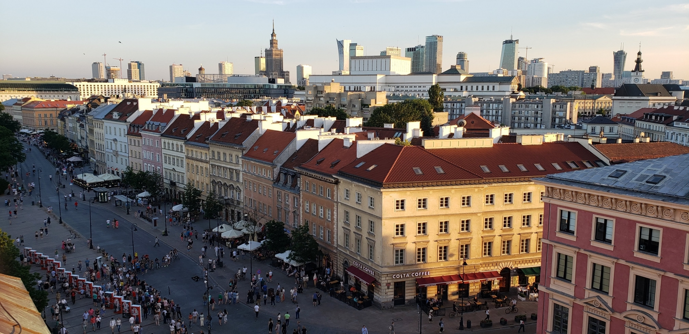
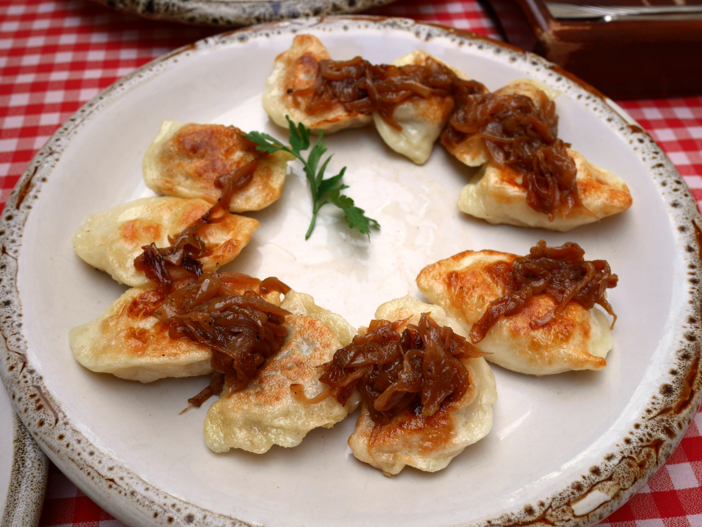
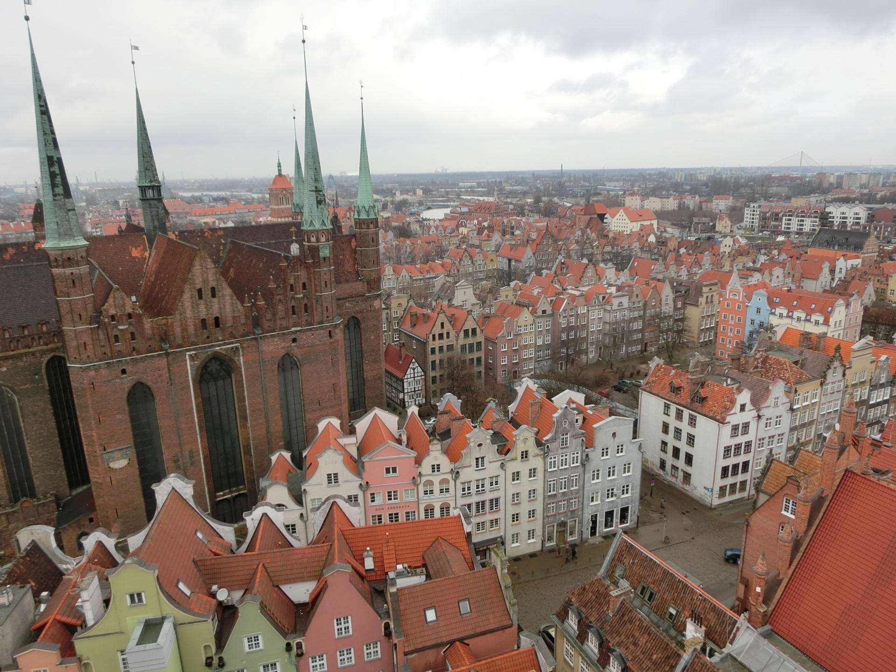

ワルシャワ
ワルシャワについて
ポーランドの首都ワルシャワ。メインの空港はワルシャワ・ショパン空港。
そう、あの有名な作曲家ショパンはなんとポーランド出身。 ショパンの音楽が聴ける椅子が街の通りにあります！
ワルシャワにある旧市街広場は観光スポットとしても人気です。
有名な食べ物

ピエロギ
ポーランドではピエロギという「日本でいう餃子」が有名です。
具材はポテトだったり、チーズとほうれん草、ジャムを入れたりと様々な種類があります。
- ポテト
- ほうれん草とチーズ
- ブルーベリージャム
ポンチキ
ポーランドのドーナツといえばポンチキ。穴は空いていなく、揚げられた生地の中にはジャムが入っているのが定番。 年に一度の行事として、ポンチキをたくさん食べるTłusty Czwartek [トゥスティ・チファルテック]という日もあります。
ウォッカ
ウォッカ大国でもあるポーランド。有名なアルコール96%のウォッカ、スピリタスもポーランドからきています。
建物

美しい中世の建築物が立ち並び、多くの立派な教会もあります。
ドイツ軍によって多くのユダヤ人が収容されたアウシュビッツ強制収容所なども有名です。